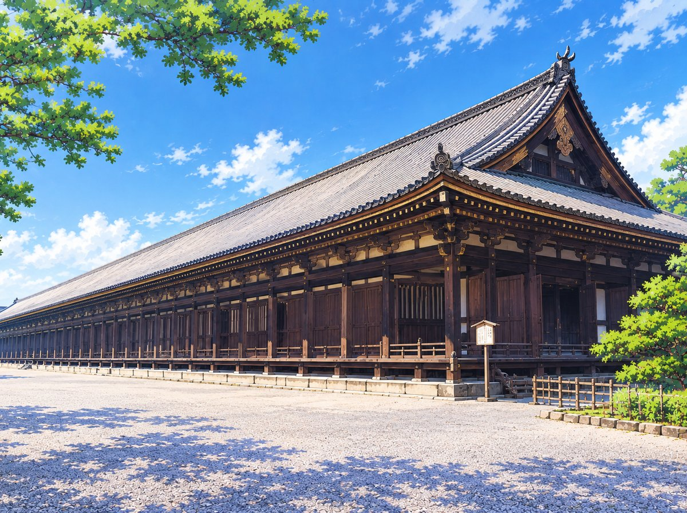

名所攻略 11
三十三間堂
SANJUSANGEN-DO1001体の観音が、ひとつのお堂に全部そろったのは2018年です。

いつ行くか
4月1日から11月15日は8時30分から17時、11月16日から3月31日は9時から16時まで。受付は閉まる30分前までです。休みの日はなく、予約も要りません。
1月中旬の日曜には、弓を射る「通し矢」の行事があります。この日は大勢の人が集まるので、静かに見たいなら避けてください。日付は年によって変わります。
見るところ
千手観音の立像1001体です。中央の大きな坐像の左右に500体ずつ、10段の壇に並び、残りの1体は坐像の後ろにいます。124体は平安時代の創建のときのもので、ほとんどは鎌倉時代の再興のときに作られました。2018年に全部が国宝になりました。
観音の前には、風神と雷神、二十八部衆の像が立っています。2018年に、古い資料をもとに本来の並びに戻されました。
知っておくこと
1001体の立像のうち何体かは、長く博物館に預けられていました。それが戻って全部がお堂にそろったのは2018年、26年ぶりのことでした。
お堂は1164年に建てられ、焼けたあと1266年に建て直されました。長さは約120メートル。柱と柱のあいだが33あることから、この名前がついています。堂内は撮影できず、靴を脱いで上がります。
回り方
京阪の七条駅から歩いて5分ほどです。京都国立博物館が道を挟んで向かいにあります。
京阪で南へ行けば東福寺と伏見稲荷、北へ行けば清水寺と祇園です。どちらと組んでも半日にまとまります。
画像は、写真ではなくオリジナルのイラストです。営業時間、料金、規則は変わるため、行く前に公式情報をご確認ください。